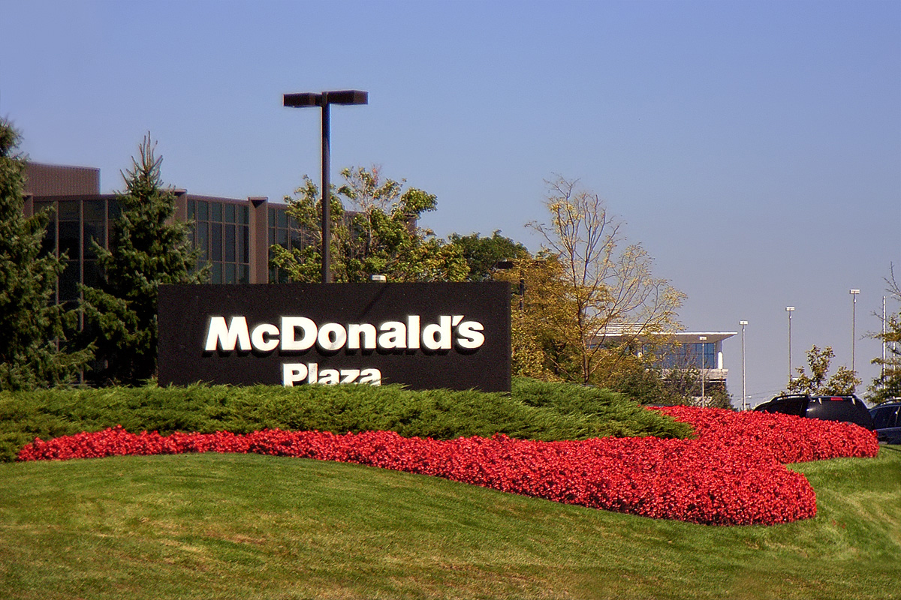

麥當勞（McDonald's）是全球規模最大且最知名的連鎖速食品牌之一，也是美式快餐文化與全球化的重要象徵。該品牌於1940年由麥當勞兄弟在美國加州創立，隨後由雷·克羅克（Ray Kroc）取得經營權，並透過特許經營模式將其版圖迅速擴展至全世界。如今，麥當勞在超過一百個國家擁有數萬家門市，每天為數千萬名顧客提供服務。 其標誌性的黃色「金拱門」招牌早已深入人心。麥當勞以提供標準化、出餐快速且價格親民的餐飲聞名，最具代表性的經典產品包括大麥克、金黃酥脆的薯條、麥克鷄塊，以及深受兒童喜愛的快樂兒童餐。此外，麥當勞也非常重視在地化策略，會根據不同國家的飲食文化推出特色餐點。 作為速食業的龍頭，麥當勞不僅改變了現代人的飲食與生活節奏，近年來更持續推動數位化轉型，如普及自助點餐機與外送服務。同時，品牌也積極投入社會公益（如麥當勞叔叔之家），在全球餐飲市場中持續發揮著無可取代的影響力。
